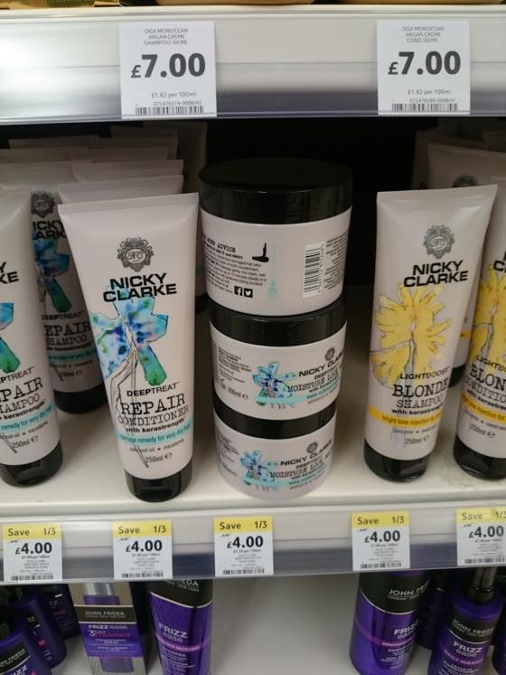
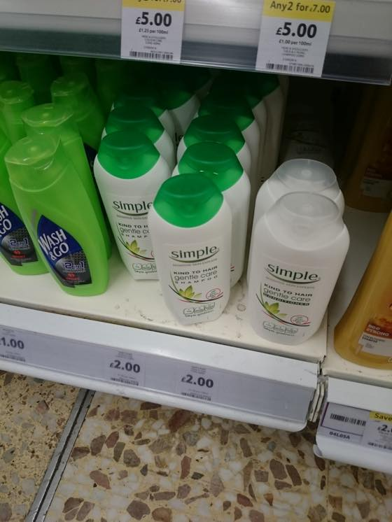
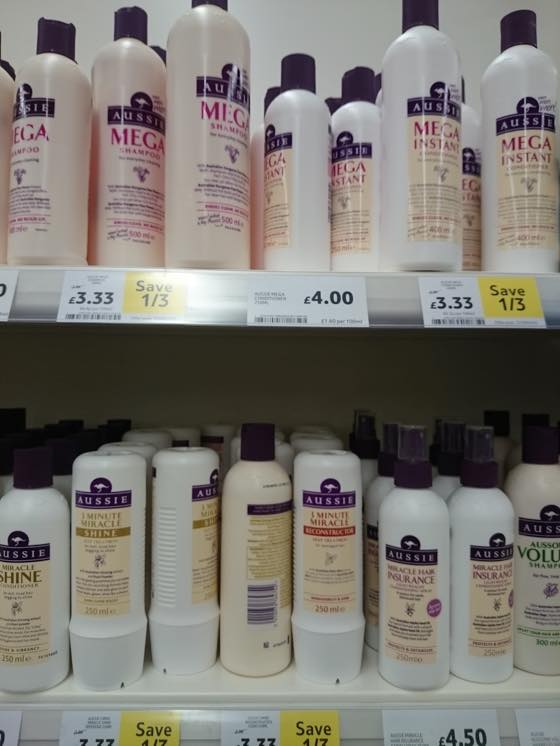
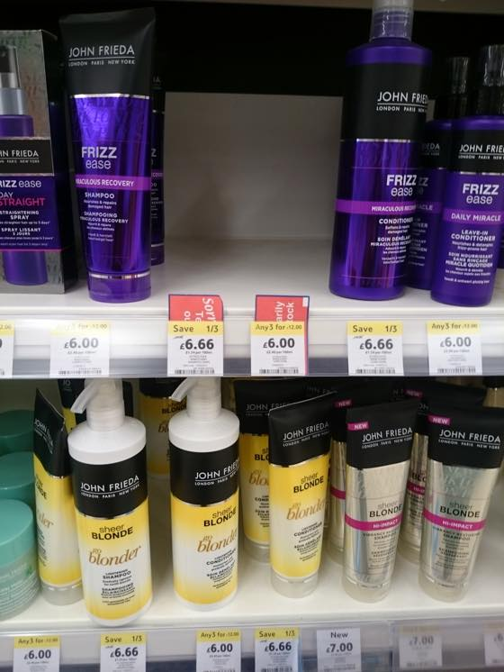
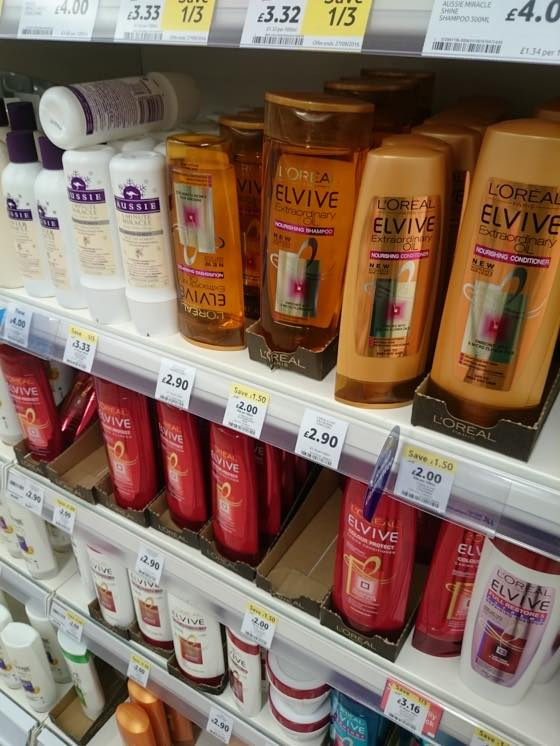
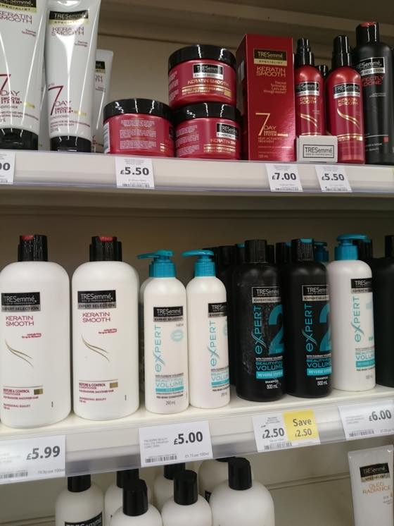
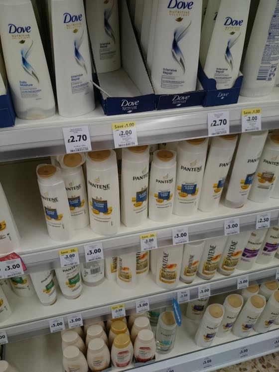
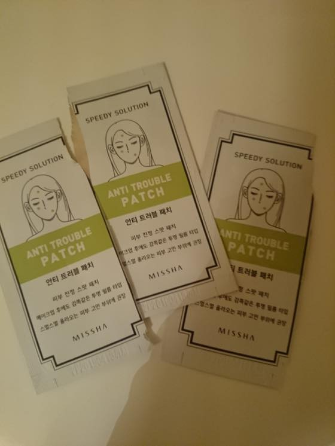

펜틴샴푸를 다 써갈때쯔음 밑도끝도없이 다음엔 튜브형 용기에 들은 샴푸를 사와야지...라고 생각하고 테스코 둘러보던중
또다시 도전정신이 발휘되어 처음보는 브랜드에 도전하게 되었습니다 :p
NICKY CLARKE 샴푸 & 컨디셔너
5일정도 써봤는데 첫째날은 괜찮넴...이러다가 둘째날 헉;; 이거 왜이리 greasy해;;; 내일 당장 딴거 사와야지..
싶다가 다음날은 또 만족스럽진 않지만 아쥬 못쓸정도는 아닌데...? 근데 머리감은후 상태가 상쾌한 느낌이 없셔;;
이래 오락가락 하고있습니다;;
최근 새로 구입한 샴푸 / 바디샵 씨위드 토너 전부 실패에요;; OTL
토너같은 경우는 얼굴 화끈거릴때 그만 써야했었는데 좀 따꼼거리지만 트러블은 없넹~싶어서 부지런히 사용한결과
반통쯤 비울때 얼굴 여기저기에 난리가 남 -_-;;
아니다 싶으면 아깝더라도 바로 치워야합니다;; 녜;;;
아래는 자주 구입하는 제품들 ^^

SIMPLE
이 브랜드 스킨케어 좋아합니다 //
메이크업 리무버 / 클렌져 / 수분크림 / 스크럽 죄다 심플 제품 :)

AUSSIE
엄청 좋은지도 모르겠지만 그렇다고 나쁘지도 않습니다

JOHN FRIEDA
이브랜드 좋아해요// 특히 뻘겅샴푸// 샴푸색이 뻘겅이야!! 좋아// <-;;

LOREAL
로레알 / 하지만 전에 써본 샤인 어쩌구 반짝이 들어간건 비추...OTL

TRESemme
이것도 자주구매하는 제품 :3

PANTENE
샴푸는 부츠나 테스코가서 그때그때 써보고싶은거 구입하는 편인데
이제 촘 새로운 브랜드가 고프네요 ;ㅂ;

이건 어제 저녁에 넘 웃겨서 찍어본 사진
매일 몸에 집어넣는 과자 & 쪼코 때문인지 / 바디샵 토너때문인지 / 수면&스트레스인지 짐작가는게 너무 많아서(....) 잘 모르겠지만;
여튼 얼굴에 동시다발적으로 여기저기 트러블이 올라온건 오랜만이라 트러블 패치를 꺼냈는데
새로 꺼내서 뜯어 쓴다음 평소 보관하는 화장대 구석 박스에 놓으려 하니 미리 뜯어서 사용하고 고이 모셔놓은 두개 발견하고 빵터졌습니다 ㅋㅋㅋㅋㅋㅋ
매번 새거 뜯어서 쓰고 구석에 잘 모셔놓고 또 새거뜯는 나란 인간 ㅋㅋㅋㅋㅋㅋㅋㅋㅋㅋㅋ